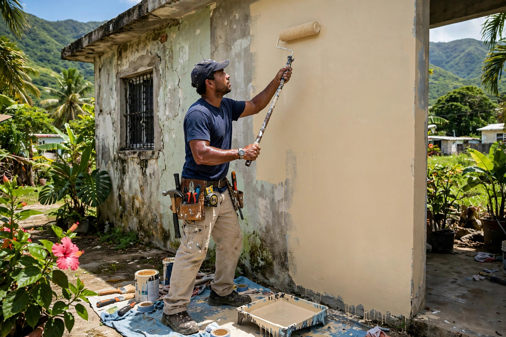
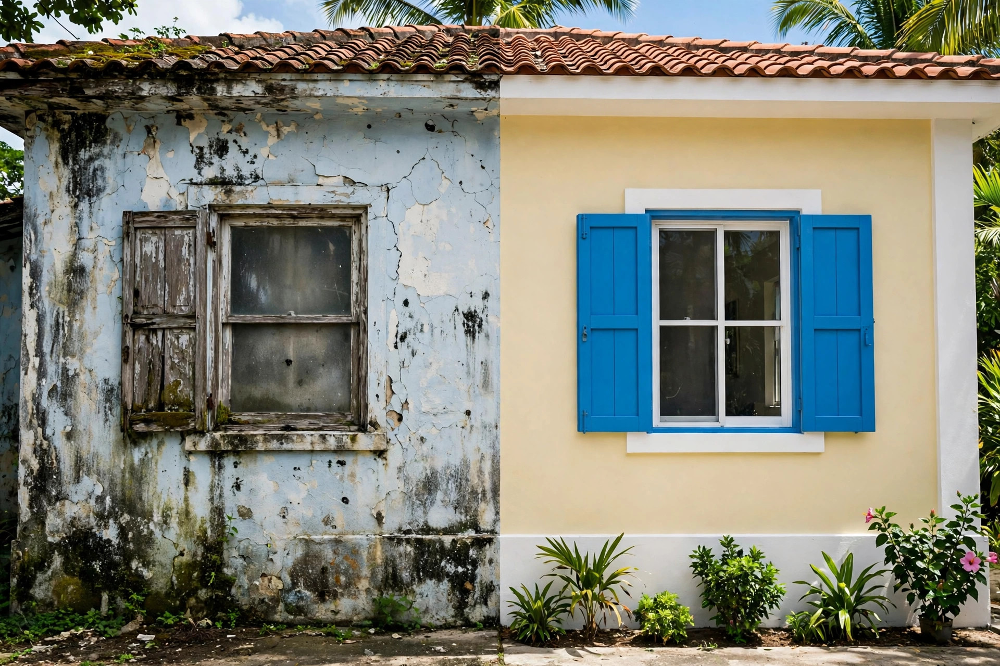
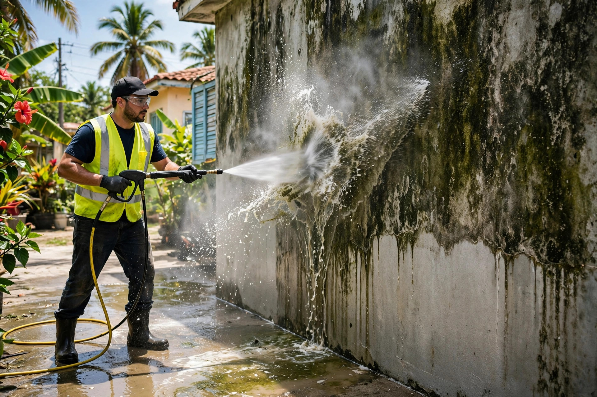
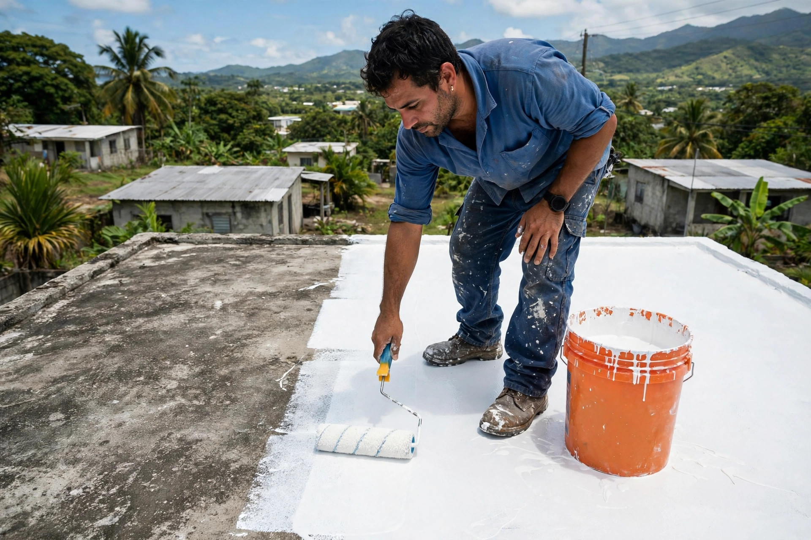
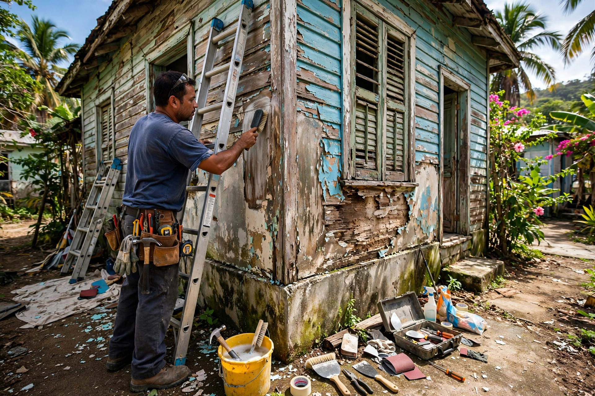

Pintura residencial
Interior y exterior. Preparamos la superficie, empañetamos donde hace falta y dejamos un acabado limpio y parejo.
Handyman en Juncos, Puerto Rico
Interior y exterior con preparación seria y acabado limpio. Un solo contacto para todo el mantenimiento de tu hogar.

Trabajos reales




Lo que hacemos
Interior y exterior. Preparamos la superficie, empañetamos donde hace falta y dejamos un acabado limpio y parejo.
Paredes, marquesinas, aceras y techos. Sacamos moho, sucio y manchas antes de pintar o sellar.
Impermeabilización para que la lluvia no entre más. Limpieza, preparación y sellador aplicado como manda.
Arreglo y limpieza de casas descuidadas: las levantamos y las dejamos habitables otra vez.
Nosotros
WR Mantenimiento a tu Hogar es un servicio de handyman en Juncos, Puerto Rico. Pintura, lavado a presión, sellado de techos y arreglo de casas deterioradas: lo que tu casa necesite, lo atendemos con seriedad y trato directo.
No somos una compañía grande con secretarias: hablas directo con quien hace el trabajo. Por eso el estimado es claro, el trato es de frente y el trabajo se entrega como se prometió.
Escríbenos por WhatsAppCómo trabajamos
Por WhatsApp al 787-531-4417. Cuéntanos qué necesita tu casa y manda fotos si puedes.
Te damos precio y alcance del trabajo antes de empezar. Sin sorpresas después.
Puntuales y ordenados, con materiales de calidad y cuidado por tu propiedad.
Caminamos el trabajo contigo hasta que quede bien. Así de simple.
Preguntas frecuentes
Sí. Escríbenos por WhatsApp al 787-531-4417 con fotos del trabajo y te damos una cotización sin compromiso.
Estamos en Juncos y servimos pueblos cercanos del centro-este de Puerto Rico. Pregúntanos por WhatsApp y te confirmamos.
Limpieza y preparación de la superficie, corrección de áreas problemáticas y aplicación de sellador impermeabilizante.
Hacemos de todo: desde un cuarto que necesita pintura hasta casas completas deterioradas que hay que levantar.
Por WhatsApp al 787-531-4417. Nos envías fotos, acordamos precio y coordinamos el día del trabajo.
Contacto
Escríbenos por WhatsApp con fotos del trabajo y te cotizamos rápido. También nos puedes llamar.
Juncos, Puerto Rico · Pintura · Lavado a presión · Sellado de techos · Reparaciones
Hecho por ManuPro
Esta página es una muestra creada por ManuPro. Si te gusta cómo se ve tu negocio aquí, puedes quedártela con uno de estos planes:
$300 $99
$600 $150
$1,000 $200